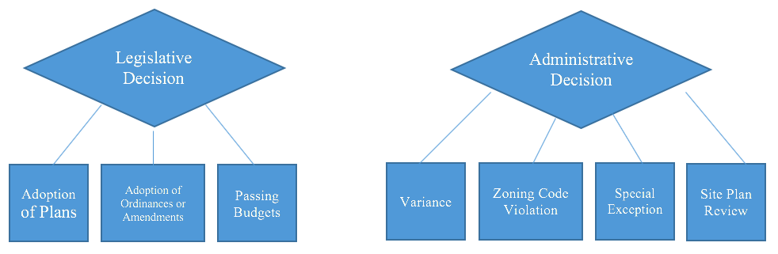

Procedural Fairness
This Module covers another central administrative law concept, that of procedural fairness. The rules for procedural fairness vary according to the enabling statutes and subject-matter for the various tribunals. However, there are many commonalities among basic principles. For example, the procedural outlines for decision-makers used by Immigration, Refugees and Citizenship Canada frames basic requirements of procedural fairness for applicants:
- To be provided with a fair and unbiased assessment of their application
- To be informed of the decision-makers concerns, and
- To have a meaningful opportunity to provide a response to concerns about their application.
4.1 Sources & Development of Procedural Fairness
Readings
- Textbook, pp. 178-195
- Nicholson v. Haldimand-Norfolk Regional Police Commissioners, 1978 CanLII 24 (SCC)
Five core principles that underlie the law of fair procedure in the administrative context:
A . THE INHERENT VALUE OF FAIRNESS
Fair procedure is valuable because it expresses a commitment to integrity in exercises of public power and a respect for the dignity of the parties affected by state action. Fairness is, in this way, an end worthy of pursuit in and of itself.
Extending the Reach of Procedural Obligations
Historically, two branches of natural justice, namely audi alteram partem (“hear the other side”) and nemo judex in sua causa (“no person can be the judge in their own cause”).
In the later decades of the 20th century, the courts moved away from the distinction between judicial, quasi-judicial, and administrative decisions when determining which public actors must act fairly.
the duty of fairness is assessed on a spectrum. At the low end of the spectrum, a decision-maker is bound by a minimum level of procedural duties, such as simply providing notice that a decision will be made to affected parties. At the high end, a decision-maker must follow a more onerous set of procedures that may, in some cases, replicate the procedures followed in a civil or criminal trial.
The Legal Consequences of Unfairness
As a general rule, administrative decisions that are made unfairly cannot stand, even if the merits of the decisions are sound.
B . THE RULE OF LAW AND ACCESS TO JUSTICE
the rule of law is a shared project in which public power is distributed across a sprawling, horizontal network of actors. Many institutions, legislatures, the executive, the courts, and the expanse of actors operating within the administrative state, participate in implementing, advancing, upholding and, at times, resisting and undermining the values that the rule of law seeks to protect. Private actors also play a role in upholding the rule of law by having high expectations of public actors and holding public decision-makers to account when those expectations are not met.
Implications this conception of the democratic rule of law have for procedural justice:
- First, upholding the democratic rule of law is a responsibility shared by a range of public institutions.
- Second, procedural design and interpretations of fairness can have a meaningful impact, either positive or negative, on access to justice.
- administrative law should strive to ensure that the legal meaning of fairness is attentive to the inextricable connection between procedural integrity and the full participation of affected parties in public decision-making.
- Third, the democratic rule of law demands that those who wield public power are held accountable when they act unlawfully.
-
A fourth and final response is that the democratic rule of law is upheld not merely by formal mechanisms of accountability and oversight, but also by a culture of decision-making that reflects fundamental values and the norms of good public administration.
- A core element of the culture of the rule of law is justification; the democratic vision regards the “justificatory exercise of reason-giving ... as an essential component of the rule of law.
- In Baker, the Court held that an administrative decision-maker is under a duty to provide “some form of reasons” when an administrative decision has “important significance.
- In Vavilov, the Court described the significance of this commitment in terms of legitimacy at 81, "[W]here reasons are required, they are the primary mechanism by which administrative decision makers show that their decisions are reasonable." and at para 98, "[w]here a decision maker’s rationale for an essential element of the decision is not addressed in the reasons and cannot be inferred from the record, the decision will generally fail to meet the requisite standard of justification, transparency and intelligibility."
C . ENFRANCHISEMENT AND FLEXIBILITY
Specific procedures that comprise a process that is fair, on the whole, will always depend on the context.
Every fair process must include steps that fall into two broad categories: first, steps concerned with “the quality of participation afforded to persons affected by [the] decision” and second, steps concerned with “the kinds of reasons which may be offered to justify the decision itself.
The law treats both participatory rights and protections from bias as vital to the integrity and fairness of public decision-making.
In Baker, L’Heureux-Dubé J articulated the legal standard for assessing whether modes of participation are fair. “Administrative decisions,” she held, must be “made using a fair and open procedure, appropriate to the decision being made and its statutory, institutional, and social context, with an opportunity for those affected by the decision to put forward their views and evidence fully and have them considered by the decision-maker.”
The standard for disqualifying bias is equally well-established. It was set out in Committee for Justice and Liberty et al. v. National Energy Board et al., 1976 CanLII 2 (SCC), a case dealing with allegations of bias against the National Energy Board. de Grandpré J held that to determine whether a decision-maker is tainted by a reasonable apprehension of bias, we should ask what an “informed person, viewing the matter realistically and practically, and having thought the matter through, [would] conclude.”
There is no set or checklist of procedures that will automatically meet the standards set in Baker or National Energy Board in all cases. ... the standards must be sufficiently expansive to capture all administrative decision-making contexts. The specific procedures that must be followed in order to satisfy the demands of fairness in each case will always depend on the circumstances.
However, as the stringency and complexity of procedural obligations expand, access to justice may diminish.
In Canada (Attorney General) v. Mavi, 2011 SCC 30 (CanLII), Binnie J wrote,
a balance must be struck. Administering a “fair” process inevitably slows matters down and costs the taxpayer money. On the other hand, the public also suffers a cost if government is perceived to act unfairly, or administrative action is based on “erroneous, incomplete or ill-considered findings of fact, conclusions of law, or exercises of discretion.
THE PRACTICES OF PROCEDURAL FAIRNESS
In order to determine the specific procedures that any administrative decision-maker must follow, we must always look to three types of sources: statutes and subordinate instruments, the Constitution, and the common law.
PROCEDURAL OBLIGATIONS ARISING FROM STATUTE, REGULATIONS, RULES, AND GUIDELINES
Enabling Statutes and Internal Instruments
Barring any constitutional concerns, the obligations set out in the enabling statute will be binding on the decision-maker. It is rare for a decision-maker’s enabling statute to provide a complete procedural code. The procedures set out in the enabling statute will usually be a minimum set that is then supplemented with additional obligations from additional regulation(s), the common law, internally made rules (see e.g. a discussion of “soft law” below), and, in some cases, constitutional law.
The legislature will delegate the authority to establish additional procedural obligations to an executive actor.
Research shows that soft law instruments developed by a decision-maker are powerful sources of authority for front-line decision-makers and have been treated as de facto binding on the ground. However, guidelines, including procedural guidelines, are not legally binding on a decision-maker.
Guidelines established by an administrative decision-maker can give rise to legitimate expectations that a particular process will be followed. We see this at work in Agraira v. Canada (Public Safety and Emergency Preparedness), 2013 SCC 36.
General Procedural Codes
Some administrative decision-makers are also subject to procedural obligations set out in general procedural statutes. General procedural codes have been enacted in four provinces: Quebec, Ontario, Alberta, and British Columbia. These statutes set out common procedures that govern the decision-making bodies that fall within the scope of the statutes.
PROCEDURAL OBLIGATIONS ARISING FROM THE CONSTITUTION
First, the Charter provides for some procedural safeguards in decision-making contexts to which it applies and when the relevant threshold is met.
The question in an administrative setting would be whether the Charter applies and whether the context constitutes a “proceeding.”
Second, statutory procedural obligations could be struck as contrary to the division of powers if ultra vires the enacting legislature or to s 96 of the Constitution Act, 1867 if, in effect, they undermine the jurisdiction of the superior courts.
Third, an administrative decision-maker’s procedural obligations can be supplemented by virtue of the rights guaranteed by s 35 of the Constitution Act, 1982 and the obligations flow-ing from the unwritten principle of the honour of the Crown.
Fourth, other unwritten constitutional principles, can be the source of procedural obligations for administrative decision-makers. For example, judicial independence has been held to be the source of administrative procedure.
Module Content
It’s important to note for now that decision-making is now seen as existing on a spectrum. The type of administrative decision and the procedural obligation it triggers influences where it will fall on this spectrum and the types of procedural fairness requirements accorded.
Our case reading for this topic, Nicholson v. Haldimand Norfolk (Regional) Police Commissioners, illustrates the movement towards developing a “duty of fairness” that applied to all administrative decision-makers. As noted above this duty consists of a spectrum of procedural obligations ranging from providing mere notice to following an exhaustive set of procedures akin to a criminal trial.
The theory in Nicholson, that entitlements to basic fairness in procedure no longer depended completely on the nature of the tribunal, was subsequently developed in practice through various decisions.
4.2 Threshold Test & Trigger
Readings
- Textbook, pp 23-25 (A); 201-203
- Cardinal v. Director of Kent Institution, 1985 CanLII 23 (SCC)
Cardinal v. Director of Kent Institution, 1985 CanLII 23 (SCC)
- [1] Legal issue: whether the segregation was imposed or continued in breach of the requirements of procedural fairness?
- [14] the Director was under a duty of procedural fairness in exercising the authority conferred by s. 40 of the Regulations with respect to administrative dissociation or segregation. This Court has affirmed that there is, as a general common law principle, a duty of procedural fairness lying on every public authority making an administrative decision which is not of a legislative nature and which affects the rights, privileges or interests of an individual.
- [21] ... because of the serious effect of the Director's decision on the appellants, procedural fairness required that he inform them of the reasons for his intended decision and give them an opportunity, however informal, to make representations to him concerning these reasons and the general question whether it was necessary or desirable to continue their segregation for the maintenance of good order and discipline in the institution.
- [23] I find it necessary to affirm that the denial of a right to a fair hearing must always render a decision invalid, whether or not it may appear to a reviewing court that the hearing would likely have resulted in a different decision. The right to a fair hearing must be regarded as an independent, unqualified right which finds its essential justification in the sense of procedural justice which any person affected by an administrative decision is entitled to have.
First, a court should ask itself what is called the “threshold” question: is this the kind of decision that should attract some kind of procedural right? At this stage, the court is not asking what those rights would encompass, but only the preliminary question of whether there should be any entitlement to procedural fairness at all.
Second, if a court determines that the threshold for some form of procedural fairness has been met, it must then address what those procedures will be.
The Supreme Court of Canada, in Baker, identified the following five factors as relevant in determining the general level of procedural fairness:
- the nature of the decision and the process followed in making it;
- the nature of the statutory scheme;
- the importance of the decision to the individual affected;
- the legitimate expectations of the parties; and
- the procedures chosen by the tribunal.
PROCEDURAL OBLIGATIONS ARISING FROM THE COMMON LAW
We must answer two questions in order to determine what procedural obligations an administrative decision-maker must follow.
First, is the duty of fairness triggered, i.e., is the decision being made one that must be made fairly?
If the answer is no, the decision-maker can, as a matter of law, proceed without the responsibility of common law obligations. If the answer is yes, we move to the second question:
What does the duty entail? As we will see, answering this question calls for a close assessment of the context. This framework is well-established in Canadian administrative law via the leading case of Baker v. Canada (Minister of Citizenship and Immigration), 1999 CanLII 699 (SCC).
Step 1: Is the Duty of Fairness Triggered?
As a general rule, first set out in Cardinal v. Director of Kent Institution, 1985 CanLII 23 (SCC), the duty of fairness applies to “every public authority making an administrative decision which is not of a legislative nature and which affects the rights, privileges or interests of an individual."
There are some limits to the reach of the duty of fairness:
- First, as a general rule, legislative decisions and legislative decision-making processes do not trigger the duty of fairness.
- The duty of fairness also does not apply to decisions of a “legislative nature” or to decisions of an administrative decision-maker acting “in a legislative capacity to make rules of general application in the public interest.
-
public employees, employed under contract and protected from wrongful dismissal, are not entitled to procedural protections at common law when they are dismissed from their jobs.
- This may be somewhat surprising as the foundational cases on the duty of fairness are Nicholson and Knight, both of which deal with the dismissal of public office holders and in both of which the duty of fairness applies.
- But the more recent case of Dunsmuir held that “[w]here a public employee is protected from wrongful dismissal by contract, his or her remedy should be in private law, not in public law.”
Step 2: What Does the Duty Entail?
The Purpose of Participatory Rights:
ensure that administrative decisions are made using a fair and open procedure, appropriate to the decision being made and its statutory, institutional, and social context, with an opportunity for those affected by the decision to put forward their views and evidence fully and have them considered by the decision-maker. (Baker at para 22)
The Contextual Factors and the Spectrum of Fairness
"Baker factors" (introduced above). the goal of assessing the "Baker factors" is to gauge where a particular decision-making context falls on the spectrum of fairness.
Identifying Specific Procedures
The usual range of possibilities includes:
- processes for giving notice,
- providing disclosure,
- holding hearings (which raises questions about the form of the hearing: oral, written, electronic, open, closed, etc.),
- ensuring representation,
- establishing opportunities to call evidence and cross-examine witnesses,
- determining deadlines and the relevance of timeliness,
- providing reasons, and so on.
First, a core element of procedural fairness is notice that a decision is to be made.
Second, hearings in administrative contexts come in a variety of forms without compromising fairness. It is only in rare cases that the common law requires that a decision-maker hold an oral hearing.
Finally, it was “now appropriate to recognize that, in certain circumstances, the duty of procedural fairness will require the provision of a written explanation for a decision." (Baker at para 43)
Module Content
Determining whether a decision must involve some procedural requirements and possess a duty of fairness involves the Court asking a “threshold question”: Are procedural requirements imposed in this kind of decision? It also involves asking the extent of those requirements, which encompasses the duty of fairness.
In Cardinal v Kent, the Supreme Court restated the general common law principle outlined in Nicholson and other cases, that a duty of procedural fairness lies on every public authority making an administrative decision “which is not of a legislative nature and which affects the rights, privileges or interests of an individual.”
As you read the case excerpt, the key question to consider is at paragraph 15, paraphrased here: What does the duty of procedural fairness reasonably require of a public authority [making administrative decisions] in the way of specific procedural rights in a particular legislative and administrative context and what should be considered to be a breach of fairness in particular circumstances?
One of the key points from Cardinal is that a non-legislative decision affecting “rights, privileges or interests of an individual” is sufficient to trigger the application of a duty of fairness.
4.3 Modern Test - Content
Readings
- Textbook, pp 25-27; 199-201; 203-214
- Baker v. Canada (Minister of Citizenship and Immigration), 1999 CanLII 699 (SCC)
CHALLENGING UNFAIRNESS
First, absent exceptional circumstances, the usual remedy for a finding of unfairness is a quashing of the administrative decision. Further, as the courts bear the constitutional responsibility to ensure that statutory decision-makers act within their jurisdiction, matters of unfair procedure could not be protected by a privative clause.
Second, traditionally, the black letter rule is that procedural decisions are reviewed on a standard of correctness.
But, who get to decide what type of procedures applies to a specific case?
The majority in Vavilov clearly states that its approach to standard of review only applies when the merits of an administrative decision are under review, and affirms that “[t]he duty of procedural fair-ness in administrative law is ‘eminently variable,’ inherently flexible and context-specific.” ... the specific procedural requirements that the duty imposes are determined with reference to all of the circumstances,” aided by an analysis of the non-exhaustive list of factors in Baker.
In summary, judicial review of procedural questions seems to entail a “free-standing” appraisal of the fairness of the decision-making process, one that can be most fairly labelled correctness.
Module Content
Baker’s Five Factors:
Flexibility and contextuality are key concepts which run through developing the procedural requirements to establish and satisfy a duty of fairness.
In terms of flexibility, Canadian courts have recognized a range of hearing processes that could satisfy common law procedural requirements that depend on the context. Flexiblity also extends to the form of decision reasons that would be acceptable.
However, contextually what was even more important was that the Court made it clear that it was not imposing a duty to give reasons in all situations. Whether the requirement existed in any particular case required a context-sensitive analysis. Relevant to this analysis were the nature of the interests at stake, whether there was a statutory right of appeal, and unspecified "other circumstances."
Note that there is flexibility even in the mandatory requirements. For example, the right to a hearing could mean no more than the opportunity to submit a written application and to have one's case actually considered and determined by reference to the criteria on which the application form questions are based. This may sound like a very minimal participation but it is still in a real sense a "hearing."
4.4 Limitations
Readings
- Att. Gen. of Can. v. Inuit Tapirisat et al., 1980 CanLII 21 (SCC)
- Homex Realty v. Wyoming, 1980 CanLII 55 (SCC)
- Wells v. Newfoundland, 1999 CanLII 657 (SCC)
In a number of decisions, the Supreme Court of Canada and other courts have also been clear that there is a limit to the extension of principles of procedural obligations and the duty of fairness. The limitations relating to the duty of fairness includes these two broad categories:
Legislative functions exclusion
The stricter requirements of procedural fairness don’t apply to legislatures exercising their legislative functions.
The making of subordinate legislation is not subject to procedural fairness.
However, the administrative bodies they create are, generally, subject to requirements of procedural fairness. When dealing with vague statutes and subordinate legislation, the common law will impose procedural fairness requirements on final decision-making where the rights, privileges and interests of individuals are at stake.
Keep in mind the contrast between actions or decisions that are “administrative and specific” (subject to duty of fairness) and those which are “legislative and general” (not subject to duty of fairness).
Cabinet and broad policy decisions
In the wake of Nicholson, in this case the Supreme Court of Canada addressed the question of whether there were now no limits to the reach of procedural fairness obligations. The Court stated that the threshold had been lowered - not eliminated.
In Inuit Tapirisat, the Court’s threshold inquiry prevented the application of procedural fairness obligations to the Governor in Council in hearing an appeal from a CRTC decision on a Bell Canada rate application. The Court described hearing a Cabinet appeal as involving "legislative action in its purest form."
What about by-laws? The Homex case dealt with the question of applying by-laws and whether a duty of fairness applied in the particular circumstances. One critical point in the decision is the Court’s analysis and characterization of the decision. In Homex, the Court stated that a by-law, on broad grounds of public policy, will typically afford the individual little or no procedural protection.
Key points to remember
First, it’s clear that the Supreme Court has emphasized that not all administrative decisions are under a duty to act fairly. The finality of a decision will be a factor to consider. A decision of a preliminary nature will not in general trigger the duty to act fairly, whereas a decision of a more final nature may have such an effect.
Canadian courts will not see any obligation of procedural fairness arising in the context of legislative action. Legislative functions obviously involves the making of both primary and subordinate legislation.
One of the exceptions involves subordinate legislation directed at a specific individual and that has the effect of resolving an ongoing dispute (as seen in Homex).
As seen in Inuit Tapirisat, duty of fairness will not apply in regard to broad, policy-based decision-making affecting a range of constituencies, and will also have little or no application in the domain of ministerial decisions taken by reference to broad policy considerations.
Take a look at the example below which uses local government decisions concerning zoning and planning to illustrate the differences between legislative decisions and administrative (including quasi-judicial and judicial) decisions. Notice that the legislative decisions tend to involve general or policy decisions while the administrative ones could involve individuals or specific targets.

Att. Gen. of Can. v. Inuit Tapirisat et al., 1980 CanLII 21 (SCC)
- ... in the exercise of a statutory power the Governor in Council, like any other person or group of persons, must keep within the law as laid down by Parliament or the Legislature.
- In short, the discretion of the Governor in Council is complete provided he observes the jurisdictional boundaries of s. 64(1).
- In refusing to intervene, Megarry J. stated in Bates v. Lord Hailsham [ [1972] 1 W.L.R. 1973.] at p. 1378:
- Let me accept that in the sphere of the so-called quasi-judicial the rules of natural justice run, and that in the administrative or executive field there is a general duty of fairness. Nevertheless, these considerations do not seem to me to affect the process of legislation, whether primary or delegated.
Wells v. Newfoundland, 1999 CanLII 657 (SCC)
- [57] Procedurally unfair or arbitrary decisions by government lack the force of law and are reviewable by the courts: Nicholson, supra, at p. 328; Knight, supra, at p. 675.
- [59] ... legislative decision making is not subject to any known duty of fairness. Legislatures are subject to constitutional requirements for valid law-making, but within their constitutional boundaries, they can do as they see fit. The wisdom and value of legislative decisions are subject only to review by the electorate. The judgment in Reference re Canada Assistance Plan, supra, at p. 558, was conclusive on this point in stating that: “the rules governing procedural fairness do not apply to a body exercising purely legislative functions”.
- [60] In Reference re Amendment of Constitution of Canada, [1981] 1 S.C.R. 753, it was stated at p. 785:
- ... Courts come into the picture when legislation is enacted and not before (unless references are made to them for their opinion on a bill or a proposed enactment).
Homex Realty v. Wyoming, 1980 CanLII 55 (SCC)
- ... wherever a statute authorizes the interference with property or other rights and is silent as to whether or not the agency in question is required to give notice prior to the intervention in such rights, the courts will "supply the omission of the legislature" and require the agency in question to afford the subject an opportunity of being heard before it proceeds: Cooper v. Wandsworth Board of Works [(1863), 14 C.B.(N.S.) 180]
- There are instances where the omission of the prerequisite notice is not supplied by the courts, as, for example, where the statute in question, by its very nature and by the legislative framework there adopted by the Legislature, must be read as precluding the requirement of prior notice.
- the action taken by the Council was not in substance legislative but rather quasi-judicial in character so as to attract the principle of notice and the consequential doctrine of audi alteram partem, as laid down by the courts as long ago as in Wandsworth, supra. ... Thus the statute does not displace, in my view, the very old rule of audi alteram partem and the resultant duty in Council to hear first and decide later.
- Having thus determined that Homex had the right to an opportunity to be heard and that Homex did not receive such an opportunity before the passage by the Village of by-law no. 7, is Homex in all these circumstances entitled to the remedy sought, that is the quashing of the by-law on judicial review?
- The British Columbia Court of Appeal in Cock v. Labour Relations Board [(1960), 26 D.L.R. (2d) 127] reversed an order of the court below quashing, by certiorari, an award by a labour relations board, and in doing so stated through Davey J.A., at p. 129:
- While the point was not taken below, in my respectful opinion, these writs should not be granted, even upon grounds otherwise legally sufficient, to applicants who in the matters before the Board have committed the fraud, trickery, and apparently perjury, found against the respondents here.
Practice Quiz
-
Which of the following is not currently a factor in determining the content of the duty of fairness:
- The financial cost of the decision to the administrative agency
- Nature of the statutory scheme
- The importance of the decision to the affected individual
-
True/False – Judicial review is like an appeal. It involves in the first instance looking at the merits of a case to determine if an injustice has been committed or rules of procedural fairness violated.
- True
- False
Judicial review is the procedure whereby courts will look at the decision of a public body and determine if the decision is within the jurisdiction of the decision-maker.
Theoretically, courts should not look at the merits of the decision and reweigh the factors.
4.5 Purpose of Procedural Fairness & Legitimate Expectations
Readings
- Agraira v. Canada (Public Safety and Emergency Preparedness), 2013 SCC 36
- Canada (Attorney General) v. Mavi, 2011 SCC 30
The purpose of common law principles of procedural fairness is, unsurprisingly, to add to the procedure of a hearing. The duty of fairness that it creates also supplement common law conceptions independence and lack of bias in decision-making.
It’s important to note that the procedural representations made by a public authority must be made accurately because they may be relied upon by an individual who may be prejudiced in certain situations.
Legitimate expectations doctrine only creates rights to be heard and make representations or be consulted where an individual has been prejudiced through relying on a representor’s (usually government or public authority) representations or submissions.
The legitimate expectations doctrine originated in England. The Lord Denning ruling in Schmidt v. Secretary of State for Home Affairs, [1969] 2 Ch. 149 (Eng. C.A.), stated that the legitimate expectations doctrine originated in England as a threshold mechanism for establishing entitlement to procedural fairness. This doctrine has evolved to define the content of duty of fairness in cases where, by representation or past practice, administrative decision-makers had led affected individuals to expect specific procedural safeguards.
In Canadian law, the legitimate expectations doctrine is part of the duty of procedural fairness. It is meant to ensure actions of public authorities in dealing with the public are predictable, treat individuals fairly and are free from arbitrary decisions.
Agraira v. Canada (Public Safety and Emergency Preparedness), 2013 SCC 36
- [93] As this Court noted in Dunsmuir, at para. 79, “[p]rocedural fairness is a cornerstone of modern Canadian administrative law. Public decision makers are required to act fairly in coming to decisions that affect the rights, privileges or interests of an individual.”
- [94] Legitimate expectations doctrine was given a strong foundation in Canadian administrative law in Baker, in which it was held to be a factor to be applied in determining what is required by the common law duty of fairness.
- If a public authority has made representations about the procedure it will follow in making a particular decision, or if it has consistently adhered to certain procedural practices in the past in making such a decision, the scope of the duty of procedural fairness owed to the affected person will be broader than it otherwise would have been.
- Likewise, if representations with respect to a substantive result have been made to an individual, the duty owed to him by the public authority in terms of the procedures it must follow before making a contrary decision will be more onerous.
- [95]The specific conditions which must be satisfied in order for the doctrine of legitimate expectations to apply are summarized succinctly in a leading authority entitled Judicial Review of Administrative Action in Canada:
- Thus, a legitimate expectation may result from an official practice or assurance that certain procedures will be followed as part of the decision-making process, or that a positive decision can be anticipated. ... Of course, the practice or conduct said to give rise to the reasonable expectation must be clear, unambiguous and unqualified.
- [96] In Mavi, Binnie J. recently explained what is meant by “clear, unambiguous and unqualified” representations by drawing an analogy with the law of contract (at para. 69):
- Generally speaking, government representations will be considered sufficiently precise for purposes of the doctrine of legitimate expectations if, had they been made in the context of a private law contract, they would be sufficiently certain to be capable of enforcement.
- [97] An important limit on the doctrine of legitimate expectations is that it cannot give rise to substantive rights (Baker, at para. 26; Reference re Canada Assistance Plan (B.C.), 1991 CanLII 74 (SCC), [1991] 2 S.C.R. 525, at p. 557). In other words, “[w]here the conditions for its application are satisfied, the Court may [only] grant appropriate procedural remedies to respond to the ‘legitimate’ expectation”.
Canada (Attorney General) v. Mavi, 2011 SCC 30
- [38] “... there is, as a general common law principle, a duty of procedural fairness lying on every public authority making an administrative decision which is not of a legislative nature and which affects the rights, privileges or interests of an individual”: Cardinal v. Director of Kent Institution, [1985] 2 S.C.R. 643, at p. 653.
- [40] In determining the content of procedural fairness a balance must be struck. Administering a “fair” process inevitably slows matters down and costs the taxpayer money. On the other hand, the public also suffers a cost if government is perceived to act unfairly, or administrative action is based on “erroneous, incomplete or ill-considered findings of fact, conclusions of law, or exercises of discretion.”
- [42] A number of factors help to determine the content of procedural fairness in a particular legislative and administrative context. ... The duty of fairness is not a “one-size-fits-all” doctrine. Some of the elements to be considered were set out in a non-exhaustive list in Baker (Baker Factors).
- [43] Here, as in Knight, the absence of other remedies militates in favour of a duty of fairness at the time of the enforcement decision (see also Baker, at para. 24).
- [68] Where a government official makes representations within the scope of his or her authority to an individual about an administrative process that the government will follow, and the representations said to give rise to the legitimate expectations are clear, unambiguous and unqualified, the government may be held to its word, provided the representations are procedural in nature and do not conflict with the decision maker’s statutory duty. Proof of reliance is not a requisite.
- [69] Generally speaking, government representations will be considered sufficiently precise for purposes of the doctrine of legitimate expectations if, had they been made in the context of a private law contract, they would be sufficiently certain to be capable of enforcement.
4.6 Judicial Review and Breach of Duty Fairness
Readings
- Cardinal v. Director of Kent Institution, 1985 CanLII 23 (SCC)
- Mission Institution v. Khela, 2014 SCC 24
For much of Canadian history in relation to judicial review, there was an open question as to what would consequences result when procedural unfairness was found. Courts wrestled with the issue of whether to begin an inquiry into whether a procedural error could affect the substance of a decision. This question was addressed in the Cardinal decision.
As you read the Cardinal excerpt, consider in particular what the Supreme Court of Canada says about the denial of a right to a fair hearing in the context of that case.
In Canada, judicial review of administrative decision-makers is premised on allowing them flexibility in choice of procedures, depending on the context of the situation.
Mission Institution v. Khela, 2014 SCC 24
- [5] In this case, the correctional authorities did not comply with the statutory disclosure requirements. The breach of the statutory requirements rendered the decision procedurally unfair, and therefore unlawful.
- [79] ... the standard for determining whether the decision maker complied with the duty of procedural fairness will continue to be “correctness”.
- [82] As this Court put it in Cardinal, one of the cases in the Miller trilogy, “there is, as a general common law principle, a duty of procedural fairness lying on every public authority making an administrative decision which is not of a legislative nature and which affects the rights, privileges or interests of an individual” (p. 653).
- [83] As the Court stated in May, “[t]he requirements of procedural fairness must be assessed contextually.” (para. 90)
- [88] When liberty interests are at stake, procedural fairness also includes measures to verify the evidence being relied upon. If an individual is to suffer a form of deprivation of liberty, “procedural fairness includes a procedure for verifying the evidence adduced against him or her” (Charkaoui v. Canada (Citizenship and Immigration), 2008 SCC 38)
- [89] Section 27(3) authorizes the withholding of information when the Commissioner has “reasonable grounds to believe” that should the information be released, it might threaten the security of the prison, the safety of any person or the conduct of an investigation. ... As a result, the Commissioner, or the warden, is entitled to a margin of deference on this point. ... If, however, certain information is withheld without invoking s. 27(3), deference will not be warranted, and the decision will be procedurally unfair and therefore unlawful.
- [94] ... Vague statements regarding source information and corroboration do not satisfy the statutory requirement that all the information to be considered, or a summary of that information, be disclosed to the inmate within a reasonable time before the decision is taken.
- [98] In this case, these statutory requirements were not met, and the decision to transfer Mr. Khela from Mission Institution to Kent Institution was therefore unlawful. The British Columbia Supreme Court properly granted habeas corpus.
4.7 Summary
In this Module, we reviewed the basic concepts of procedural fairness in Canadian administrative law. Administrative decision-makers in Canada must follow proper procedure in arriving at their decisions. The cases we reviewed illustrate that in the absence of a statute setting out their basic procedures, administrative decision-makers are still bound by common law principles of procedural fairness.
One of the key points to remember is that context is all important in this area. What constitutes procedural fairness in a given situation will depend first on the administrative decision-maker and the nature and consequences of the power they have exercised. In addition, courts will look at the affected individual(s). There is also a consideration of the need for flexibility in administrative decision-making and the practical reality of time-consuming court procedures to consider.